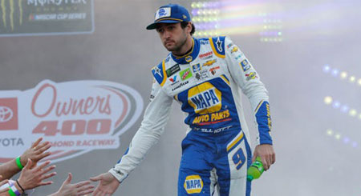

About

Life
Chase Elliott is the son of former NASCAR driver Bill Elliott. Bill Elliott used to be the most popular driver when he raced. Chase Elliott has continued on his father's legacy by winning most popular driver in 2018. Elliott was born November 28, 1995 and is from Dawsonville, Georgia. When Elliott was just 13, he was featured in Sports Illustrated as a potential future superstar. Along with his racing career, Chase Elliott also apperared in Cars 3, voicing Chase Racelott.
Career
In 2013, Chase Elliott entered the NASCAR Truck Series, the lowest national series in NASCAR. He would earn his first win at Canadian Tire Motorsport Park. In 2014, Elliott moved up to the Nationwide Series(now known as the Xfinity Series) and would win races at Texas and Darlington. Elliott also won the championship this year. He raced one more year in the Nationwide Series in 2015 along with running a select few cup races to prepare him to move up. In 2016, it was announced that Chase Elliott would replace the legendary Jeff Gordon in the 24 car at Hendrick Motorsports. In 2016, Chase Elliott won the rookie of the year in the NASCAR Cup Series. In 2016 and 2017, Elliott would drive the 24 car and not reach victory lane. In 2018, the number 9 car became available and Chase Elliott took over the number as that was the number his dad used to race in. After a rough start to the year in 2018, Elliott would finally reach victory lane for the first time in his 99th cup start at Watkins Glen. This win gave Elliott confidence as he ended off the year winning two more races at Dover and Kansas. Elliott would also be named the most popular driver in 2018 as it was the first year without Dale Earnhardt Jr. In 2019, Elliott would continue his winning ways, starting off with a win at Talladega and then winning Watkins Glen yet again in dominating fashion. Elliott would also go on to have a comeback victory after crashing at the Charlotte Roval to secure his third win in 2019.